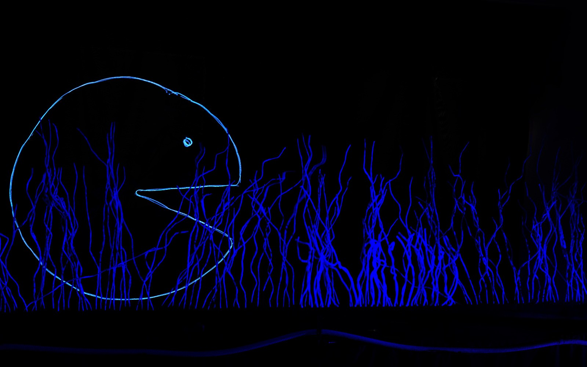
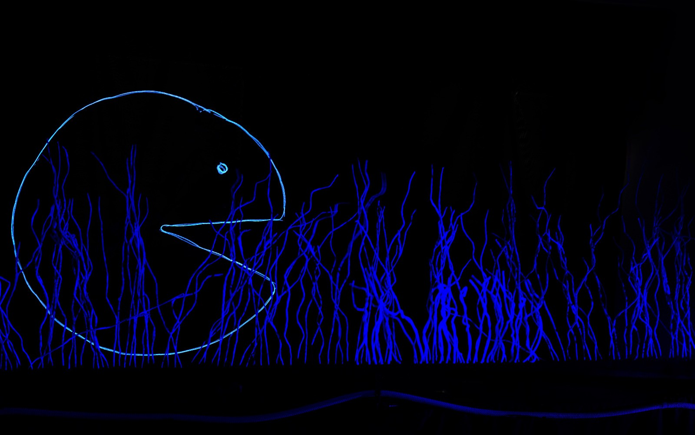

Un círculo incompleto emprende la búsqueda de su parte perdida. Teatro de marionetas, luz negra y hilos de neón que hablan de identidad, amor y plenitud.
La Tegala nace en 2024 en Haría, Lanzarote, bajo la dirección de Antonio D. G. Orellana. Somos un espacio de creación y comunidad, donde tradición y experimentación se encuentran.
La Parte Que Falta — Adaptación de Shel Silverstein. Estreno: 18 de octubre 2024 en el Festival Harionetas. Duración: 55 min. Público recomendado: +6 años.


 

Correo: antoniodaniel3@hotmail.com